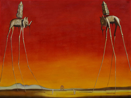

"Qui blâme la peinture blâme la nature" Léonard de Vinci
Les mouvements en peinture désignent des approches techniques ou visuelles communes à différents artistes. Un artiste peintre peut s'inscrire dans un mouvement, soit parce qu'il s'y est consciemment impliqué, soit parce que des historiens d'art l'ont placé dans cette catégorie.
Impressionnisme
L'impressionnisme est un mouvement pictural français né de
l'association de quelques artistes de la seconde moitié
du XIXe siècle. Fortement critiqué à ses
débuts ,
ce mouvement se manifesta notamment de 1874
à 1886
par huit expositions publiques à Paris, et marqua
la rupture de l'art moderne avec l'académisme.
L'impressionnisme est notamment caractérisé par
une tendance à noter les impressions fugitives,
la mobilité des phénomènes, plutôt que l'aspect stable
et conceptuel des choses, et à les reporter directement sur
la toile.
Claude Monet - 1872
Surréalisme
La trahison des images - R. Magritte

The elephants - S. Dali
Le surréalisme est un mouvement littéraire,
culturel et artistique qui a débuté dans les
années 1920. Il comprend l’ensemble des procédés
de création et d’expression utilisant toutes les
forces psychiques (automatisme, rêve, inconscient)
libérées du contrôle de la raison et en
lutte contre les valeurs reçues.
Ce mouvement repose sur la croyance à la réalité supérieure de certaines formes d'associations
négligées jusqu'à lui, à la toute-puissance
du rêve, au jeu désintéressé de la pensée.
Les caractéristiques des oeuvres surréalistes
sont principalement la surprise et la
juxtaposition inattendue mais de nombreux
artistes surréalistes expliquent leur travail
comme étant une expression philosophique d'abord
et avant tout. Réné Magritte,
Joan Miró ou encore
sont des peintres qui ont
particulièrement marqué ce mouvement.
Pour G. Durozoi, le mot surréalisme est désormais victime de sa fausse popularité : on n'hésite pas à qualifier de surréaliste le premier fait un peu bizarre ou inhabituel, sans davantage se soucier de rigueur. Le surréalisme est pourtant exemplaire par sa cohérence et la constance de ses exigences. Cependant, Alain et Odette Virmaux pensent que cette évolution reste en accord avec le mot, les surréalistes ayant une prédilection pour l'humour noir et le nonsense.